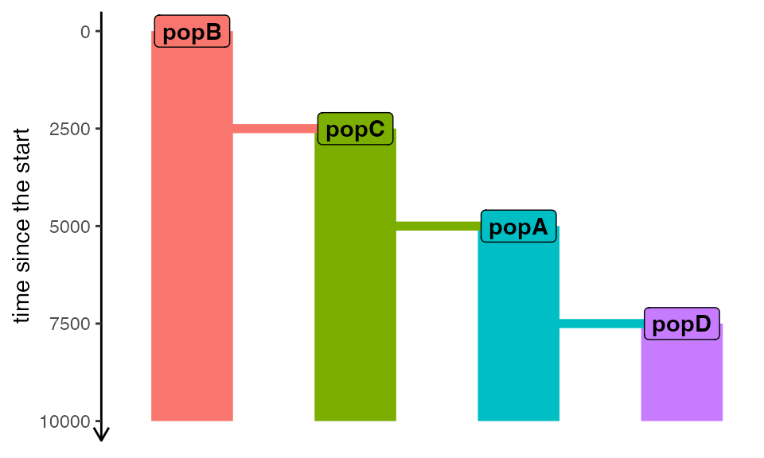

vignette-03-custom-priors.RmdIn a previous vignette, we looked at how demografr allows a complete customization of what a “scaffold model” can look like and that basically any functions which returns a compiled slendr model can serve as such a scaffold, with its function arguments representing parameters which need to be assigned priors.
In this vignette, we will take things even further, showing that in
addition to standard prior sampling expression using familiar functions
such as runif or rnorm, any function which
follows certain constraints can serve as a prior.
The example we will use here will focus on trying to infer phylogenetic relationships between populations, using prior distributions on trees themselves.
Again, let’s begin by loading a couple of libraries and setting up parallelization for inference:
library(dplyr)
library(readr)
# R packages for working with phylogenetic trees
library(ape)
library(phangorn)
library(slendr)
library(demografr)
# my Mac has 10 cores, feel free to adjust this
library(future)
plan(multisession, workers = availableCores())We then load summary statistics computed from “sequenced” real data:
diversity_df <- read_tsv(system.file("examples/01_diversity.tsv", package = "demografr"))
divergence_df <- read_tsv(system.file("examples/01_divergence.tsv", package = "demografr"))
observed <- list(diversity = diversity_df, divergence = divergence_df)And we also define corresponding tree-sequence-based summary statistics using functions that operate on simulated tree-sequence objects:
compute_diversity <- function(ts) {
samples <- ts_samples(ts, split = TRUE)
ts_diversity(ts, sample_sets = samples) %>%
mutate(stat = paste0("pi_", set)) %>%
select(stat, value = diversity)
}
compute_divergence <- function(ts) {
samples <- ts_samples(ts, split = TRUE)
ts_divergence(ts, sample_sets = samples) %>%
mutate(stat = sprintf("d_%s_%s", x, y)) %>%
select(stat, value = divergence)
}
functions <- list(diversity = compute_diversity, divergence = compute_divergence)Our ABC model will use standard priors on \(N_e\) and divergence times. As in our other vignettes, we will use uniform distributions to do this.
Recall a function runif which is used in the following
way to sample a single number:
runif(n = 1, min = 1, max = 1000)
#> [1] 910.3563To save us a bit of typing and to make prior definitions a bit more consise, demografr uses the following syntax to define model parameters:
prior <- Ne_popXYZ ~ runif(1, 1000)This formula-based syntax, which some of you will be familiar from
fitting linear models
(i.e. lm(response ~ pred1 + pred2 + pred3)) does not
actually perform any sampling. It merely represents a readable way to
encode probabilistic sampling statements. To demonstrate this, typing
the prior in the R console simply returns the statement:
prior
#> Ne_popXYZ ~ runif(1, 1000)You might also notice that the right-hand side of the prior sampling
expression above Ne_popXYZ ~ runif(0, 1000) does not
represent a valid statement:
runif(1, 1000)
#> Warning in runif(1, 1000): NAs produced
#> [1] NaNThat is not a problem, because sampling from priors (which demografr performs internally during ABC simulations) is taken care of automatically, converting the above function call into proper sampling statement:
( Ne_popXYZ ~ runif(1, 1000) ) %>% sample_prior()
#> $variable
#> [1] "Ne_popXYZ"
#>
#> $value
#> [1] 902.9741Now that we have gone through how priors work using standard R
functions like runif, how can we define our own prior
distributions?
In short, any function that returns a single value (of
whatever type! see below) can serve as a prior. The only requirement is
that the first argument of the function must be called n.
This is purely for formal reasons and to make the prior sampling
interface of demografr in line with the interface of all
functions of the r[unif/norm/pois/exp/...] type that we
know from R (i.e. the full interface of the function rnorm
is rnorm(n, mean = 0, sd = 1)). Except for the first
argument n, you can use whatever function arguments you
want.
Let’s consider a uniform prior over tree genealogies with \(n\) tips by defining a simple R function like this:
topologies <- allTrees(n = 4, rooted = TRUE, tip.label = c("popA", "popB", "popC", "popD"))
sample_topology <- function(n, topologies) {
sample(seq_along(topologies), size = 1)
}Note that as explained in the paragraph above, the function has a
formal argument n but does not actually use it. The
argument which is used internally is ntips,
describing the number of leaves of the tree to be generated by the
function rtopology() from the package ape.
When we call it manually, we get a tree in the standard phylogetic format of the R package ape.
tree <- sample_topology(, topologies) %>% topologies[[.]]
tree
#>
#> Phylogenetic tree with 4 tips and 3 internal nodes.
#>
#> Tip labels:
#> popA, popB, popC, popD
#>
#> Rooted; no branch lengths.Using our tree sampling function we can now define a uniform prior over all phylogenetic trees of a given number of leaves:
prior <- topology ~ sample_topology(topologies)
sample_prior(prior)
#> $variable
#> [1] "topology"
#>
#> $value
#> [1] 2
model <- function(i, topologies) {
tree_model(topologies[[i]], N = 1000, time_span = 10000, generation_time = 1)
}Hopefully, it should be clear how much more flexibility this kind of set up gives us in defining scaffold models for an ABC analysis. Of course, running this function with a given set of parameters compiles a standard slendr model, no surprises there. This makes it easy to verify that the generating function is set up correctly, like we do in the following code chunk by providing arbitrary values of our parameters:
test_model <- model(1, topologies)
plot_model(test_model)
How do we use this kind of flexible scaffold model for ABC inference? First, we need to specify the priors. This is very easy: the only thing we need to do is specify prior parameter sampling statements with variable names matching the function arguments!
priors <- list(
i ~ sample_topology(topologies)
)Note that the visualization shows the same model. This is not a
surprise, because what the automated functions tree_model()
does internally is run exactly the same sequence of commands we
specified manually above.
For such generating function-based models, it is even more worth to validate the ABC setup to catch issues as early as possible:
validate_abc(model, priors, functions, observed, topologies = topologies)
#> ============================================================
#> A generating function was provided as a scaffold
#> ============================================================
#> Checking the presence of required function arguments... ✓
#> ------------------------------------------------------------
#> Testing sampling of each prior parameter:
#> * i ✓
#> ------------------------------------------------------------
#> Running the model function with sampled prior values... ✓
#> ------------------------------------------------------------
#> Simulating a tree sequence from the constructed model... ✓
#> ------------------------------------------------------------
#> Computing user-defined summary functions:
#> * diversity ✓
#> * divergence ✓
#> ------------------------------------------------------------
#> Checking the format of simulated summary statistics:
#> * diversity ✓
#> * divergence ✓
#> ============================================================
#> No issues have been found in the ABC setup!Having convinced ourselves that the ABC model components are correctly configured, we would proceed with inference (again, we’re not going to run the full ABC pipeline here because it would take a lot of time to get useful posteriors):
# first simulate data
data <- simulate_abc(model, priors, functions, observed, iterations = 1000, sequence_length = 1e6, recombination_rate = 1e-8, topologies = topologies)
# then perform ABC inference
abc <- perform_abc(data, tolerance = 0.05, method = "neuralnet")